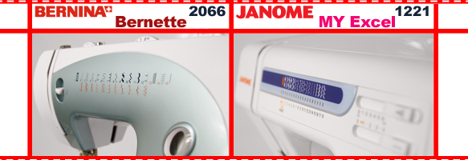
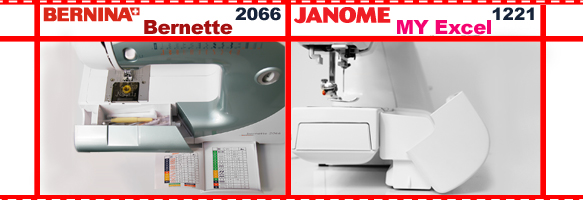

|
Продолжим сравнивать популярные и недорогие электромеханические машины. В нижеописанном тест-драйве встретятся в честном поединке Bernina Bernette 2066 и Janome МЕ 1221. Данные модели оснащены горизонтальным ротационным челноком. |
|  |
|
Внешне Bernina утонченна и привлекательна. Современный дизайн вынуждает задержать взгляд и провоцирует повышенный интерес. Это неудивительно, ведь модель более модернезирована, она куда моложе своей соперницы, которая выпущена за место предшествующей её Janome ME 18 w. Как и многие представленные модели фирмы Janome она обладает простыми и неказистыми внешними данными. Многие придерживаются мнения, что внешность не имеет значения. Не будем и мы заострять на этом внимание. Главное – качество и удобство в процессе шитья. Перейдем к обсуждению эргономики и анализу технического вопроса. |
|  |
|
В первую очередь, следует отметить возможность регулировки натяжения нижней нити у Bernette, через специальное отверстие. У Janome отрегулировать нижнюю нить невозможно. Обсудим приспособления для хранения аксессуаров. Ящик-пенал у Bernina 2066 выполнен более аккуратно и продуманно, но при использовании ощущается невысокая надежность креплений. К сожалению, 1221 это контейнер вообще наровит выпасть при первом удобном случае. Следовательно, и в этом модели схожи. Правда, рукавная платформа Швецарской швейной машины удобнее - более вытянутая и узкая. Благодаря этому комфортно работать с манжетами, рукавами, подшивать низ брюк и т.д. Еще можно упомянуть о том, что у Bernina Bernette присутствует система облегченной заправки нижней нити Drop-in – не нужно вытаскивать шпульную нить в ручную. Легкое и доступное выключение подачи ткани (нижнего транпортера), хорошая устойчивость, обеспечивающаяся удобным регулирующимся по высоте ножкам и устойчивой опорной плите, плавное переключение длины и ширины строчки (регуляторы в виде колесиков), баланс петли (позволит Вам самостоятельно регулировать интенсивность обметывания петли и устанавливать разные соотношения её сторон)- эта характеристика поможет выполнить декоративные петли, креативно украсив Ваши изделия, удобный нитевдеватель, линейка на передней панели и выдвижной ящик с подробным швейным советником - все это совмещает в себе Bernina 2066. К недостаткам стоит отнести нетрадиционное расположение включения реверса «под левую руку». Что же касается представительницы азиатского производства, то у нее тоже достойный швейный советник, классическое расположение реверса и устойчивая платформа. Смущает только несколько странных решений. Например, отсутствие задней крышки корпуса. На деле, это увеличивает шумность и снижает электробезопасность. Установлен слегка экстравагантный и неудобный в использовании нитевдеватель.Отметим, что в таком виде эта деталь только в модели 1221. Регуляторы изменения длины стежка и ширины зиг-зага, выполненные в виде ползунков, влияют на качество и немного сужают возможности швейной машины. Как же дело обстоит с прошиваемыми материалами? Bernina обладает хорошей рейкой и посаженным челноком, что позволяет ей проще работать с легкими и капризными материалами. В этом Janome ей уступает. Строчки у обеих машин имеют крен на правую сторону, но это уже можно отнести к особенностям горизонтального челнока. |
|
Попробуем на хлопке выметать плотную петлю. Легкая настройка длины стежка на 0,4 мм у Бернины не может не радовать. Выбираем нужную операцию, устанавливаем лапку и приступаем к выметыванию. Итог задания - машина выполнила плотную и ровную прямоугольную петлю. Janome тоже справилась с задачей. Но петля получилась более жидкая, по причине отсутствия возможности столь точной регулировки длины стежка. Очень сложно бывает ползунками-переключателями выставить нужное значение. Ведь речь заходит о десятых долях мм! |
|
Обе машины без труда справились с 6-ю слоями джинсы. Смело можно сделать вывод: машины выдерживают нагрузку, которая создается при обработке сверхтяжелых материалов. При этом строчка качественная и плотная. |
Вывод: Если Вам нужна добротная машина, чтобы чаще работать с плотными и многослойными изделиями,то Janome справится с этим на «ура». Но для деликатных тканей Bernina будет более рентабельной техникой, за которую можно безбоязненно отдавать деньги.
В данной статье мы провели сравнение швейных машинок Bernina Bernette 2066 и Janome 1221. Получить информацию о сравнении других швейных машин вы можете на странице «обзоры». Сайт регулярно обновляется и дополняется новыми обзорами, не пропустите!